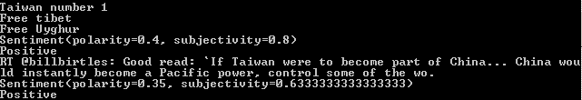

Twitter Sentiment Analyzer
There are two sources for this project:
- Twitter Sentiment Analysis - Learn Python for Data Science #2 by Siraj Raval
- How to build a twitter sentiment Analyzer using TextBlob
In this case we are going to use TextBlob
Now, what is sentiment analysis, it is the process of determining whether a piece of writing is positive, negative or neutral, there are several ways to do this sentiment analysis, the two more common approaches will be:
- Lexicon-base model
- Machine Learning-based Method
In a really shallow description/definition, Lexicon is a method that will list the worlds as positive and negative, e.g ‘nice’,+2, ‘good’,+1,’terrible’,-1.5), The algorithm will find all the words and combine individual results and provide a result base in that value.
Twitter API¶
First, we will need to register the app in twitter in order to get the various keys associated with the API, there will be 4 keys:
consumer_keyconsumer_key_secretaccess_tokenaccess_token_secret
In order to continue we will need to install two packages, tweepy and textblob, we can do this using pip,
1 | pip install tweepy |
with this package we will handle the Twitter API
1 | pip install textblob |
and with this will make the sentiment analysis. Once we have the packages we can start the code, first we need to import the packages
1 2 | import tweepy from textblob import TextBlob |
now, we assigned the keys to variable to pass it later in the code
1 2 3 4 | consumer_key = ‘[consumer_key]’ consumer_key_secret = ‘[consumer_key_secret]’ access_token = ‘[access_token]’ access_token_secret = ‘[access_token_secret]’ |
Tweepy¶
Tweepy support OAuth authentication, this is handle by the class tweepy.OAuthHandler, An instance of OAuthHandler must be created passing the consumer token and the secret.
Next, on this instance, we will call a function set_access_token by passing the access_token and access_token_secret.
Finally we create and instance of the api with the tweepy function API()
1 2 3 | auth = tweepy.OAuthHandler(consumer_key,consumer_key_secret) auth.set_access_token(access_token,access_token_secret) api = tweepy.API(auth) |
the next step will be to find the public tweets related to a topic, in this case we use the method search of the API.
1 | public_tweet = api.search('Dogs') |
Sentiment Analysis¶
TextBlob¶
TextBlob is a library Natural Language Processing (NLP).
Sentiment analysis¶
As a result of the sentiment analysis we will receive a tuple (polarity, subjectivity). The polarity score is a float within a range of [-1.0,1.0]. The subjectivity is a float within the range [0.0,1.0] where 0.0 is very objective and 1.0 is very subjective.
so now we are going to check each tweeter in our public_tweets variable
1 2 3 4 5 6 7 8 9 10 | for tweet in public_tweets: print(tweet.text) analysis = TextBlob(tweet.text) print(analysis.sentiment) if analysis.sentiment[0]>0: print('positive') elif analysis.sentiment[0]<0: print('Negative') else: print('Neutral') |
here the complite script:
1 2 3 4 5 6 7 8 9 10 11 12 13 14 15 16 17 18 19 20 21 22 23 24 25 26 27 28 29 30 | import tweepy from textblob import TextBlob consumer_key = 'xcrKGTL1FWhBB5si7xNrxpxVL' # this is a place holder not the real key consumer_key_secret = '8WrC0ukU0ejs9E5eblGlCtJTrLVMsLeXwj7cZCSMqiL3ke67SP' # this is a place holder not the real key access_token = '90495695-UOx9C6Zl1l2U2xFjw2LitDLOXu6aylWwf0p4UDQDA' # this is a place holder not the real key access_token_secret ='WXFqNV5Da8hwwh5oIfUXhsBKb9ouvE6gQCZ3fIgQLtdm2' # this is a place holder not the real key # set the OAuth authentication auth = tweepy.OAuthHandler(consumer_key,consumer_key_secret) auth.set_access_token(access_token,access_token_secret) api = tweepy.API(auth) public_tweets = api.search('Taiwan') for tweet in public_tweets: print(tweet.text) analysis = TextBlob(tweet.text) print(analysis.sentiment) if analysis.sentiment[0] > 0: print('Positive') elif analysis.sentiment[0] < 0: print('Negative') else: print('Neutral') |
